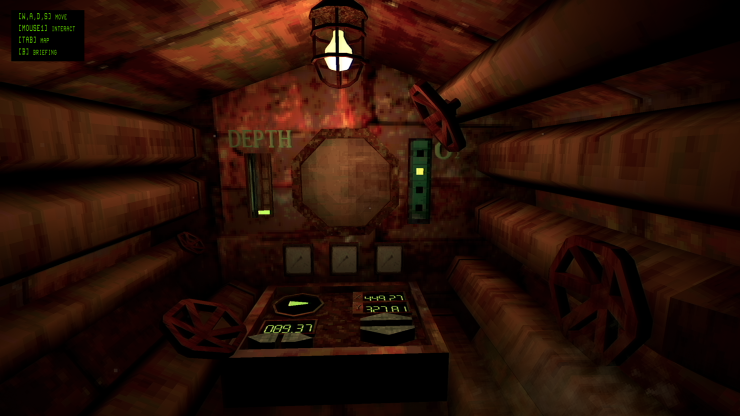

Hello! My name is Li and I am a student at the University of Montana. I am a Media Arts student trying to get my degree in Game Design. I LOVE games and this is a repository of some of the ones I remember most from my childhood as well as a display of some of my own work! I do have an itch.io page with small ammount of games I've made for class. Some of them are finished and some are not. I also have an artstation account with work I've created for class as well as some person work. All these links for my personal work will be listed in the Info page! Also listed in the info page will be resources to learn more about the games that I talk about and games that you remember and maybe want to find for yourself!
Games of all kinds are labours of love and countless hours by teams of artists and that MATTERS. However, with the rapid developement of better and better technology, games that were made for older models of technology are being left behind in the rush of progress. Whether it's because of incompatibility issues due to hardware updates, inability to gain access to games because they are only available on physical media like CD ROMS or floppy disks, or because the publishers of the game see no financial gain to be had in keeping these games available, many of these games are on the brink of becoming lost media. Games are art. Art deserves to be appreciated by everyone regardless of profit. Projects like the Video Game History Foundation and My Abondonware are doing the work to not only act as a repository for code but also work to make old games playable again for the public. The digital age is amazing in a lot of ways, but the lack of physical records means that if the digital files are gone and don't exist anywhere else, then they're gone for good. Servers are great for saving shelf space but not so great for keeping permanent records. Which is why it's important for us to make sure there are fail-safes to keep these games alive through community projects.
Many popular games today are looking to gaming's past for their inspirations, particularly in the horror genre. Two of the most popular horror games of the 2020s are Mouthwashing by developers Wrong Organ, which won two awards at the 2024 Horror Games Awards and was nominated in both the Steam and Indie Games Awards ceremonies, and David Szymanski's Iron Lung, which recieved amazing reviews and has a movie that just release to one of the biggest indie movie openings in history. Mouthwashing and Iron Lung both embraced the low poly aethsetic of the late 90s and early 2000s for their visuals, adding a unique and memorable style to each. Another game that uses dated visuals to add to the atmosphere of their game is Proximate developed by Cain Maddox. In Proximate, you play as a worker investigating an abandoned lab with one catch, you can't actually see anything in your vicinity. You have a headset strapped to your face that you cannot remove for the entire duration of the game. The headset approximates what you bump into as you stumble around this environment, digging into what happened at the lab and it's former occupants.
